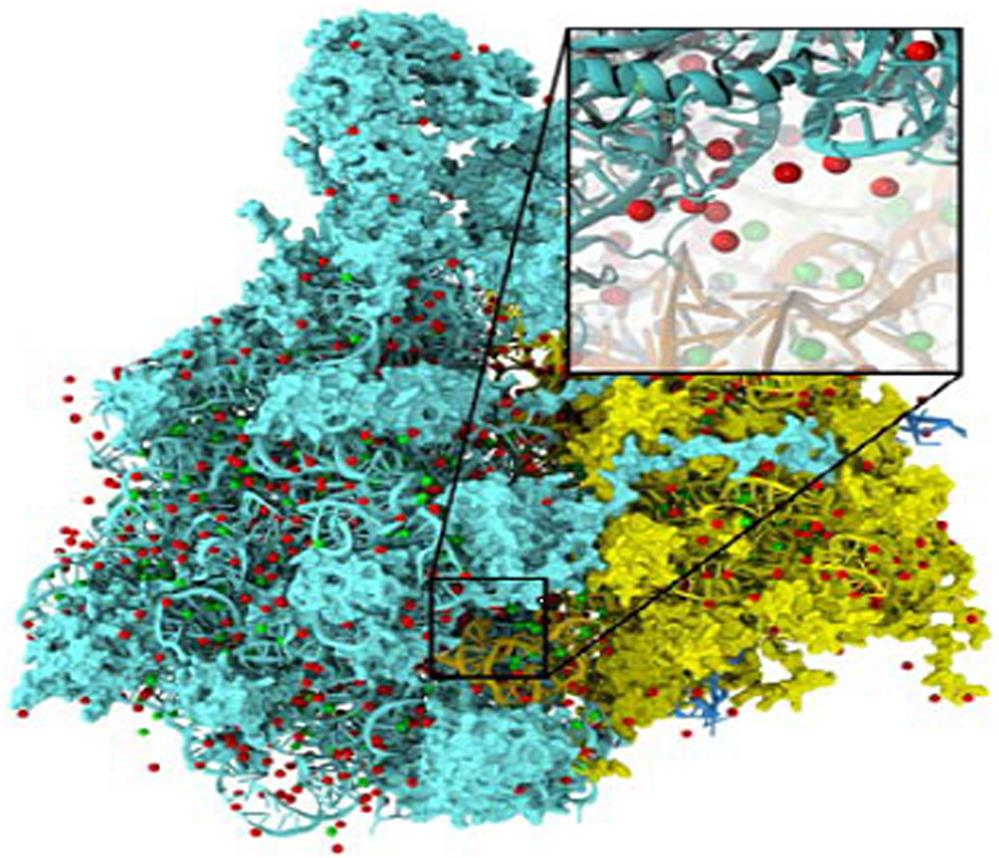
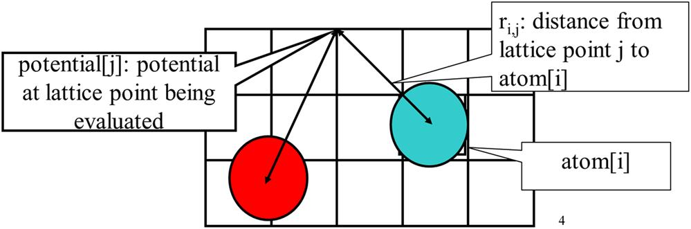
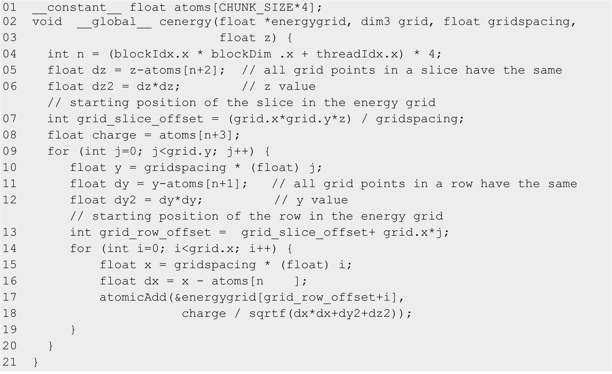
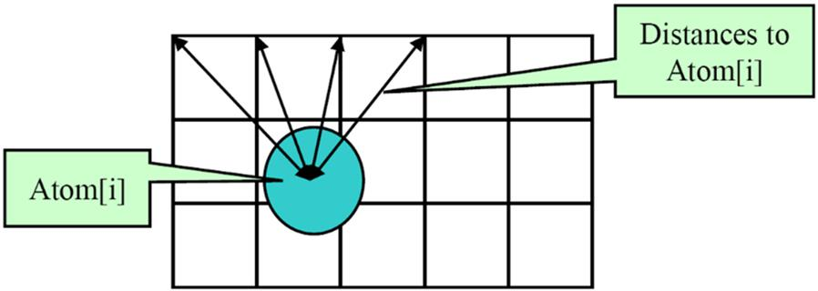
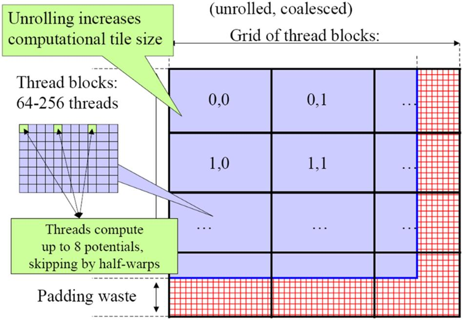
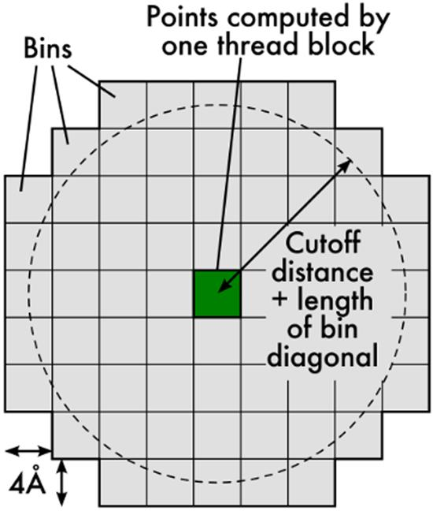

With special contributions from John Stone
This chapter presents a series of decisions and tradeoffs in parallelizing the calculation of electrostatic potential energy in a regularly spaced energy grid. We show that parallelizing a highly optimized sequential C implementation of the direct Coulomb summation method leads to a slow scatter kernel that requires heavy use of atomic operations. We then show that one can parallelize a less optimized sequential C code into a gather kernel that has much higher parallel execution speed. We also show that through thread coarsening, we can reclaim much of the efficiency of the optimized sequential execution. We further demonstrate that by carefully choosing the grid points to fold into each thread, the kernel can have completely coalesced memory write patterns. The chapter concludes by introducing the cutoff summation method and the binning technique to tackle the data size scalability challenges in large simulations.
Electrostatic potential energy; molecular dynamics; atomic operation; thread coarsening; memory coalescing; cutoff; binning; data size scaling
The previous case study used a statistical estimation application to illustrate the process of selecting an appropriate level of a loop nest for parallel execution, transforming the loops for reduced memory access interference, using constant memory for magnifying the memory bandwidth for read-only data, using registers to reduce the consumption of memory bandwidth, and using special hardware functional units to accelerate trigonometry functions. In this case study, we use a molecular dynamics application based on regular grid data structures to illustrate the use of optimization techniques that achieve global memory access, coalescing and improved computation throughput. As we did in the previous case study, we present a series of implementations of an electrostatic potential map calculation kernel in which each version improves on the previous one. Each version adopts one or more practical techniques from Chapter 6, Performance Considerations. Some of the techniques were used in the previous case study, but some are different: systematic reuse of computational results, thread granularity coarsening, and fast boundary condition checking. This application case study shows that the effective use of these practical techniques can significantly improve the execution throughput of the application.
This case study is based on visual molecular dynamics (VMD) (Humphrey et al., 1996), a popular software system that was designed for displaying, animating, and analyzing biomolecular systems. VMD has more than 200,000 registered users. It is an important foundation for a modern “computational microscope” with which biologists can observe tiny life forms, such as viruses, that are too small for traditional microscopy techniques. While it has strong built-in support for analyzing biomolecular systems, such as calculating electrostatic potential values at spatial grid points of a molecular system (the focus of this chapter), it has also been a popular tool for displaying other large datasets, such as sequencing data, quantum chemistry simulation data, and volumetric data, owing to its versatility and user extensibility.
While VMD is designed to run on a diverse range of hardware, including laptops, desktops, clusters, and supercomputers, most users use VMD as a desktop science application for interactive three-dimensional (3D) visualization and analysis. For computation that runs too long for interactive use, VMD can also be used in a batch mode to render movies for later use. A motivation for accelerating VMD is to make batch mode jobs fast enough for interactive use. This can drastically improve the productivity of scientific investigations. With CUDA devices widely available in desktop PCs, such acceleration can have broad impact on the VMD user community. To date, multiple aspects of VMD have been accelerated with CUDA, including electrostatic potential map calculation, ion placement, molecular orbital calculation and display, and imaging of gas migration pathways in proteins.
The computation covered in this case study is the calculation of electrostatic potential maps in a grid space. This calculation is often used in the placement of ions into a molecular structure for molecular dynamics simulation. Fig. 18.1 shows the placement of ions into a protein structure in preparation for a molecular dynamics simulation. In this application the electrostatic potential map is used to identify spatial locations where ions (red dots) can fit in according to physical laws. The function can also be used to calculate time-averaged electrical field potential maps during molecular dynamics simulation, which is useful for the simulation process as well as the visualization and analysis of simulation results.

There are several methods for calculating electrostatic potential maps. Among them, direct Coulomb summation (DCS) is a highly accurate method that is particularly suitable for GPUs (Stone et al., 2007). The DCS method calculates the electrostatic potential value of each grid point as the sum of contributions from all atoms in the system. This is illustrated in Fig. 18.2. The contribution of atom i to a lattice point j is the charge of atom i divided by the distance from lattice point j to atom i. Since this needs to be done for all grid points and all atoms, the number of calculations is proportional to the product of the total number of atoms in the system and the total number of grid points. For a realistic molecular system this product can be very large. Therefore the calculation of the electrostatic potential map has been traditionally done as a batch job in VMD.

Fig. 18.3 shows the base C code of the DCS code. The function is written to process a two-dimensional (2D) slice of a 3D grid. The function will be called repeatedly for all the slices of the modeled space. The structure of the function is quite simple with three levels of for loops. The outer two levels iterate over the y dimension and the x dimension of the grid point space. For each grid point, the innermost for loop iterates over all atoms, calculating the contribution of electrostatic potential energy from all atoms to the grid point. Note that each atom is represented by four consecutive elements of the atoms[] array. The first three elements store the x, y, and z coordinates of the atom and the fourth element the electrical charge of the atom. At the end of the innermost loop, the accumulated value of the grid point is written out to the grid data structure. The outer loops then iterate and take the execution to the next grid point.
Note that the DCS function in Fig. 18.3 calculates the x and y coordinates of each grid point on the fly by multiplying the grid point index values by the spacing between grid points. This is a uniform grid method in which all grid points are spaced at the same distance in all three dimensions. The function takes advantage of the fact that all the grid points in the same slice have the same z coordinate. This value is precalculated by the caller of the function and passed in as a function parameter (z). There are, however, several optimizations that can be done to the sequential C code in Fig. 18.3 to significantly improve its execution speed.
Fig. 18.4 shows a C code for DCS with a few optimizations to improve its execution speed and efficiency. First, the innermost loop (n-loop) in Fig. 18.3 has been exchanged into the outermost loop (line 05 in Fig. 18.4). Thus the code iterates over all atoms. For each atom the inner loops (i-loop and j-loop) scatter the contribution of the atom to all the grid points. As we discussed in Chapter 17, Iterative Magnetic Resonance Imaging Reconstruction, the loop interchange is permissible because the three levels of loops in Fig. 18.3 are perfectly nested and all the iterations are independent of each other.
The loop interchange enables two optimizations. First, the z components of the distance between an atom and all grid points in the plane are identical and can be calculated once for the entire slice of the grid point. Therefore the calculation can be done outside the two inner loops (lines 6–7). Similarly, the y components of distance between an atom and all grid points in the same row are identical and can be done outside the innermost loop (lines 11–12). In comparison, the y and z components of the distance were both calculated in the innermost loop in Fig. 18.3. This drastic reduction in the number of calculations makes the C code in Fig. 18.4 much faster. These optimizations cannot be done in Fig. 18.3 because the innermost loop iterates over all atoms, so one must recalculate the x, y, and z components of the distance as they change from atom to atom.
For GPU execution we assume that the host program inputs and maintains the atomic charges and their coordinates in the system memory. It also maintains the grid point data structure in the system memory. The DCS kernel is designed to process a 2D slice of the electrostatic potential grid point structure (not to be confused with thread grids). These grid points are like the grid points for discretization that were discussed in Chapter 8, Stencil. For each 2D slice, the CPU transfers its grid data to the device global memory. Similar to the k-space data (Chapter 17, Iterative Magnetic Resonance Imaging Reconstruction), the atom information is divided into chunks to fit into the constant memory. For each chunk of the atom information, the CPU transfers the chunk into the device constant memory, invokes the DCS kernel to calculate the contribution of the current chunk to the current slice, and prepares to transfer the next chunk. After all chunks of the atom information have been processed for the current slice, the slice is transferred back to update the grid point data structure in the CPU system memory. The system then moves on to the next slice.
Let us now focus on the design of DCS kernel. It is natural to parallelize the optimized C code in Fig. 18.4. The resulting kernel is shown in Fig. 18.5. The defined constant CHUNK_SIZE specifies the number of atoms that should be transferred into the GPU constant memory for each kernel call. The value of CHUNK_SIZE*4 should be less than or equal to 64K. The kernel uses each thread to implement an iteration of the outermost loop in Fig. 18.4 and scatters the contribution of its assigned atom to all grid points. Unfortunately, as we learned in Chapter 17, Iterative Magnetic Resonance Imaging Reconstruction, this scatter approach to parallelization requires atomic operations for updating the energy grid points (lines 17–18), which significantly reduces the speed of parallel execution.

As we learned in Chapter 17, Iterative Magnetic Resonance Imaging Reconstruction, we can instead use a gather approach in which each thread calculates the accumulated contributions of all atoms to one grid point. This is a preferred approach, since each thread will be writing into its own grid point and there is no need to use atomic operations. However, this requires the loops to be arranged in the ordering of the unoptimized C code in Fig. 18.3; that is, we would be parallelizing a slower C implementation. This exemplifies a frequently experienced dilemma in parallelizing applications: The optimized sequential code is not as amenable to parallelization as the unoptimized sequential code is. The downside is that we can end up with drastically slower execution within each thread, which can reduce the speed benefit of parallelization. We will return to this point later in this chapter.
Fig. 18.6 shows a kernel based on the gather approach. The kernel is based on the unoptimized C code in Fig. 18.3. We form a 2D thread grid that matches the 2D potential grid point organization. To do so, we need to modify the two outer loops in lines 04–06 of Fig. 18.3 into perfectly nested loops so that we can use each thread to execute one iteration of the two-level loop. We can either perform a loop fission (as we did in the previous case study) or move the calculation of the y coordinate (line 05 of Fig. 18.3) into the inner loop. The former would require us to create a new array to hold all y values and would result in two kernels communicating data through the global memory. The latter increases the number of times that the y coordinate will be calculated. In this case, we choose to perform the latter, since there is only a small amount of calculation that can be easily accommodated in the inner loop without significantly increasing the execution time of the inner loop. The amount of work to be absorbed into the inner loop is much smaller than that in Chapter 17, Iterative Magnetic Resonance Imaging Reconstruction. The former would have added a kernel launch overhead for a kernel in which threads do little work. The selected transformation allows all i and j iterations to be executed in parallel. This is a tradeoff between the amount of calculation done and the level of parallelism achieved.
Inside the kernel code in Fig. 18.6, the outer two levels of the loop in Fig. 18.3 have been removed and are replaced by the execution configuration parameters in the kernel invocation (lines 04–05 of Fig. 18.6). Within each thread grid, the thread blocks are organized to calculate the electrostatic potential of tiles of the grid structure. In the simplest kernel, each thread calculates the value at one grid point. In more sophisticated kernels, each thread calculates multiple grid points and exploits the redundancy between the calculations of the grid points to improve execution speed. This is an example of the thread coarsening optimization discussed in Chapter 6, Performance Considerations and will be discussed in the next section.
The performance of the kernel in Fig. 18.6 is quite good, since its execution speed is not hampered by atomic operations. Also, a quick glance over the code shows that each thread does nine floating-point operations for every four memory elements accessed. These atoms[] array elements for each atom are cached in a hardware constant cache memory in each streaming multiprocessor (SM) and are broadcast to many threads. The massive reuse of these constant memory elements across threads makes the constant cache extremely effective, eliminating the vast majority of the DRAM accesses. As a result, global memory bandwidth is not a limiting factor for this kernel.
Although the kernel in Fig. 18.6 avoids the global memory bottleneck through constant caching, it still needs to execute four constant memory access instructions for every nine floating-point operations performed. These memory access instructions consume hardware resources that could otherwise be used to increase the execution throughput of floating-point instructions. Furthermore, the execution of these memory access instructions consumes energy, an important limiting factor for many large-scale parallel computing systems. This section shows that we can use the thread coarsening technique to fuse several threads together so that the atoms[] data can be fetched once from the constant memory, stored in registers, and used for multiple grid points.
Furthermore, as shown in Fig. 18.7, all energy grid points along the same row (y dimension) have the same y coordinate. Therefore the difference between the y coordinate of an atom and the y coordinate of any grid point along a row has the same value. In the DCS kernel in Fig. 18.6, this calculation is redundantly done by all threads for all grid points in a row when calculating the distance between the atom and the grid points. We can eliminate this redundancy and improve the execution efficiency.

The idea is to have each thread calculate the electrostatic potential for multiple energy grid points in the same row. The kernel in Fig. 18.8 has each thread calculate four grid points. For each atom the code calculates dy, the difference of the y coordinates, only once (line 21). It then calculates the expression dy*dy + dz*dz and saves it to the automatic variable dysqdzsq, which is assigned to a register (line 23). This value is the same for all four grid points. The electrical charge information is also accessed from constant memory and stored in the automatic variable charge (line 24). Therefore the calculation of energy0 through energy3 can all just use the values stored in the registers.
Similarly, the x coordinate of the atom is also read from constant memory and used to calculate dx0 through dx3 (lines 17–20). Altogether, this kernel eliminates three accesses to constant memory for the y coordinate of its atom, three accesses for the x coordinate of its atom, three accesses for the charge of the atom, three floating-point subtraction operations, five floating-point multiply operations, and nine floating-point add operations in processing an atom for four grid points. A quick inspection of the kernel code in Fig. 18.8 shows that each iteration of the loop performs four constant memory accesses, three floating-point subtractions, eleven floating-point additions, six floating-point multiplications, and four floating-point divisions for four grid points.
The reader should also verify that the version of DCS kernel in Fig. 18.6 performs 16 constant memory accesses, 12 floating-point subtractions, 12 floating-point additions, 12 floating-point multiplications, and 12 floating-point divisions—a total of 48 floating-point operations for the same four grid points. Going from Fig. 18.6–Fig. 18.8, there is a total reduction from 16 constant memory accesses and 48 operations down to 4 constant memory accesses and 24 floating-point operations, a sizable reduction. One can expect a sizable improvement in both the execution time and the energy consumption of the kernel.
The cost of the optimization is that more registers are used by each thread. This can potentially reduce the number of threads that can be accommodated by each SM. However, since the number of registers stays within the permissible limit, it does not limit the occupancy of GPU execution resources.
While the performance of the DCS kernel in Fig. 18.8 is quite high, a quick profiling run reveals that the threads perform memory writes inefficiently. In lines 30–33, each thread writes four neighboring grid points. Unfortunately, the write pattern of adjacent threads in each warp will result in uncoalesced global memory writes. There are two problems that cause the uncoalesced write pattern in the kernel. First, each thread calculates four adjacent neighboring grid points. Thus for each statement that writes to the energygrid[] array, the threads in a warp are not accessing adjacent locations. Note that two adjacent threads access memory locations that are four elements apart. Thus the 32 locations to be written by all the threads in a warp are spread out, with three elements in between the loaded/written locations. This problem can be solved by assigning adjacent grid points to adjacent threads in each block. We first assign blockDim.x consecutive grid points in the x dimension to the threads. We then assign the next blockDim.x consecutive grid points to the same threads. We repeat the assignment until each thread has the number of grid points desired. This assignment is illustrated in Fig. 18.9.

The kernel code with coarsened thread granularity and coalescing-aware assignment of grid points to threads is shown in Fig. 18.10. Note that the x coordinates that are used to calculate the atom-to-grid-point distances for a thread’s assigned grid points are offset by blockDim.x*gridspacing. This reflects the fact that the x coordinates of the four grid points assigned to a thread are blockDim.x grid points away from each other. After the end of the loop, the indices of the memory writes to the energygrid array are blockDim.x away from each other as well. Hence all writes to the energygrid array will be coalesced, and the performance of the kernel will be improved over that of Fig. 18.8.
We can typically come up with multiple algorithms to solve a given problem. Some algorithms require fewer steps of computation than others, some expose a higher degree of parallel execution than others, some have better numerical stability than others, and some consume less memory bandwidth than others. Unfortunately, there is often not a single algorithm that is better than others in all the four aspects. Given a problem and a decomposition strategy, a parallel programmer often needs to select an algorithm that achieves the best compromise for a given hardware system.
In general, alternative algorithms for solving the same problem should reach the same solution. Under this requirement, one can optimize the computation for better efficiency and/or more parallelism. In some applications, one can often come up with even more aggressive algorithm strategies if the problem can be solved with slight variation in the final solution. An important algorithm strategy, referred to as cutoff summation, can significantly improve the execution efficiency of grid algorithms such as the electrostatic potential calculation by sacrificing a small amount of accuracy. This is based on the observation that many grid calculation problems are based on physical laws in which numerical contributions from particles or samples that are far away from a grid point can be collectively treated with an implicit method at much lower computational complexity.
The cutoff summation strategy is illustrated for the electrostatic potential calculation in Fig. 18.11. Fig. 18.11(A) shows the direct summation algorithms that were discussed in the previous sections of this chapter. Each grid point receives contributions from all atoms. While this is a very parallel approach and achieves excellent speedup, it does not scale well to very large energy grid systems in which the number of atoms increases proportionally to the volume of the system. The amount of computation increases with the square of the volume. For large volume systems, such increase makes the computation excessively long even for massively parallel devices.
We know that each grid point needs to receive accurate contributions from atoms that are close to it. The atoms that are far away from a grid point will have a tiny contribution to the energy value at the grid point because the contribution is inversely proportional to the distance. Fig. 18.11(B) illustrates this observation with a circle drawn around a grid point. The contributions to the grid point energy from atoms outside the circle (dark atoms) are small and can be handled with a separate implicit method. If we can devise an algorithm in which each grid point receives contributions only from atoms within a fixed radius of its coordinate, the computational complexity of the algorithm will be reduced to being linearly proportional to the volume of the system. This would make the computation time of the algorithm linearly proportional to the volume of the system. Such algorithms have been used extensively in sequential computation.
In sequential computing, a simple cutoff algorithm handles one atom at a time. For each atom the algorithm iterates through the grid points that fall within a radius of the atom’s coordinate. This is a straightforward procedure, since the grid points are in an array that can be easily indexed as a function of their coordinates. A C implementation of the cutoff algorithm can be derived with minor modifications to the C implementation of DCS in Fig. 18.4 by restricting the range of i and j of the inner loops to the energy grid points that fall into the radius. However, this simple procedure does not carry over easily to parallel execution. The reason is what we discussed in Section 18.2: The atom-centric parallelization does not work well, owing to its scatter memory update behavior.
Therefore we need to find a cutoff binning algorithm based on the grid-centric decomposition: Each thread calculates the energy value at one grid point. Fortunately, there is a well-known approach to adapting a direct summation algorithm, such as the one in Fig. 18.10, into a cutoff binning algorithm. Rodrigues et al. presents such an algorithm for the electrostatic potential problem (Rodrigues et al., 2008).
The key idea of the algorithm is to first sort the input atoms into bins according to their coordinates. Each bin corresponds to a box in the energy grid space, and it contains all atoms whose coordinates fall into the box. These bins are implemented as multidimensional arrays: the x, y, and z dimensions as well as the fourth dimension that is a vector of atoms in the bin.
We define a “neighborhood” of bins for a grid point as the collection of bins that contain all the atoms that can contribute to the energy value of the grid point. Fig. 18.12 shows an example of the neighborhood bins for a grid point. Note that nine bins around the grid point overlap with the circle of cutoff distance. For the correct cutoff summation we need to make sure that all atoms in these nine bins are considered for contribution to the grid point. Note that some of the atoms in the neighborhood bins may not fall into the radius. Therefore in processing an atom from one of the neighborhood bins, all threads need to check whether the atom falls into its radius. This can cause some control divergence among threads in a warp.
Although Fig. 18.12 shows only one layer (2D) of bins that immediately surround the bin containing a grid point as its neighborhood, a real algorithm will typically have multiple 3D bins in a grid point’s neighborhood. In this approach, all threads iterate through their own neighborhood. They use their block and thread indices to identify the coordinates of their assigned grid point and use these coordinates to identify the appropriate bins to examine. One can think of the neighborhood bins as a stencil in the energy grid space. However, the calculations that are involved in determining the neighborhood bins given a cutoff radius can be a complex geometric problem whose solution can be time consuming. Therefore the neighborhood bins are usually defined for all threads in a block and are prepared before launching the grid.
Fig. 18.13 shows a per-block design of neighborhood bins. Based on the block dimensions and the grid spacing, one can calculate the area (volume in 3D) of energy grid space covered by each block. We show the areas covered by the blocks as squares in Fig. 18.13. For simplicity we assume that each of these areas is also covered by a bin; that is, all atoms that fall into the same square will be collected into the same bin. For example, if the grid spacing is 0.5 Å and the blocks are 8×8×8, each block would cover a 4 Å×4 Å×4Å cube in the energy grid space. If we assume a typical cutoff distance of 12 Å for molecular-level force calculation, we need to identify all bins that can potentially be fully or partially covered by any of the 512 circles, each of which is centered at one of the grid points covered by one of the threads in the block. We can also use a conservative approximation by drawing a supercircle that is centered at the center of the bin with a radius that is the cutoff distance plus half of the bin diagonal. The rationale is that this supercircle would cover all the circles that are centered at the corners of the bin. We can simply create a list of the relative positions of the bins that are fully or partially covered by the supercircle.

Fig. 18.14 shows a small example of identifying neighborhood bins. We see that for each bin, there are 9 bins that are fully covered by the supercircle and 12 bins that are partially covered. We can generate a list of 9 + 12=21 neighborhood bins that each thread in a block needs to examine for atoms that are within the cutoff distance of the grid point covered by the thread. These bins are expressed as the relative offset of the bin coordinates. For example, the 9 bins that are fully covered by the supercircle can be expressed as the list (−1, −1), (0, −1), (1,−1), (−1, 0), (0, 0), (1, 0), (−1, 1), (0, 1), and (1, 1), as illustrated in the top portion of Fig. 18.14. The list would be supplied to the kernel, most likely as a constant memory array. During kernel execution, all threads in a block would iterate through the neighborhood list. For each neighborhood bin, the threads apply the offsets to the coordinates of the bin covered by the block and derive the coordinate of the neighbor bin, as illustrated in the bottom portion of Fig. 18.14. They collaborate to load the atoms in the bin into the shared memory and then each thread individually checks whether these atoms fall within the cutoff distance of its assigned grid point. Each thread could make different decisions about including or excluding each atom for contributing to the energy value at its assigned grid point.
The improvement in computational complexity in a cutoff binning algorithm mainly comes from the fact that each thread now examines a much smaller subset of atoms, defined by the neighborhood bins, in a large grid system. However, this makes constant memory much less attractive for holding the atoms. Since thread blocks will be accessing different neighborhoods, the limited-sized constant memory will unlikely be able to hold all the atoms that are needed by all active thread blocks. This motivates the use of global memory to hold a much larger set of atoms. To mitigate the bandwidth consumption, threads in a block collaborate in loading the atom information in each common neighborhood bin into the shared memory. All threads then examine the atoms out of shared memory.
One subtle issue with binning is that bins may end up with different numbers of atoms. Since the atoms are statistically distributed in the grid system, some bins may have lots of atoms, and some bins may end up with no atoms at all. To guarantee memory coalescing, it is important that all bins be of the same size and aligned at appropriate coalescing boundaries. This would require us to fill many bins with dummy atoms whose electrical charge is 0, which causes two negative effects. First, the dummy atoms still occupy global memory and shared memory storage. They also consume data transfer bandwidth to the device. Second, the dummy atoms extend the execution time of the thread blocks whose bins have few real atoms.
A good approach is setting the bin size at a reasonable level that covers the number of atoms in the vast majority of the bins, typically much smaller than the largest possible number of atoms in a bin. The binning process maintains an overflow list. In processing an atom, if the atom’s home bin is full, the atom is added to the overflow list instead. After the device completes a kernel, the resulting grid point energy values are transferred back to the host. The host executes a sequential cutoff algorithm on the atoms in the overflow list to complete the missing contributions from these overflow atoms.
As long as the overflow atoms account for only a small percentage (e.g., less than 3%) of the atoms, the additional sequential processing time of the overflow atoms is typically shorter than that of the device execution time. One can also design the kernel so that each kernel invocation calculates the energy values for a subvolume of grid points. After each kernel completes, the host launches the next kernel and processes the overflow atoms for the completed kernel. Thus the host will be processing the overflow atoms while the device executes the next kernel. This approach can hide most, if not all, of the delays in processing overflow atoms, since it is done in parallel with the execution of the next kernel.
This chapter presents a series of decisions and tradeoffs in parallelizing the calculation of electrostatic potential energy in a regularly spaced energy grid. We show that parallelizing a highly optimized sequential C implementation of the DCS method leads to a slow scatter kernel that requires heavy use of atomic operations. We then show that one can parallelize a less optimized sequential C code into a gather kernel that has much higher parallel execution speed. We also show that through thread coarsening, we can reclaim much of the efficiency of the optimized sequential execution. We further demonstrate that by carefully choosing the grid points to fold into each thread, the kernel can have completely coalesced memory write patterns.
While DCS is a highly accurate method for calculating the electrostatic potential energy map of a molecular system, it is not a scalable method. The number of operations that are performed by the method grows proportionally with the number of atoms and the number of grid points. When we increase the physical volume of the molecular system to be simulated, we should expect both the number of grid points and the number of atoms to increase proportionally to the physical size. As a result, the number of operations to be performed will be approximately proportional to the square of the physical volume; that is, the number of operations to be performed will grow quadratically with the volume of the system being simulated. This makes the use of DCS method not suitable for simulating realistic biological systems. We show that by slightly reducing the accuracy, a cutoff summation method implemented with the binning technique can dramatically improve the complexity of the computation while retaining a high level of parallelism.